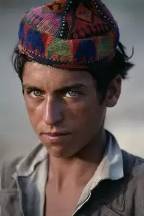
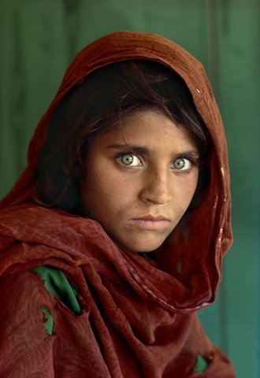
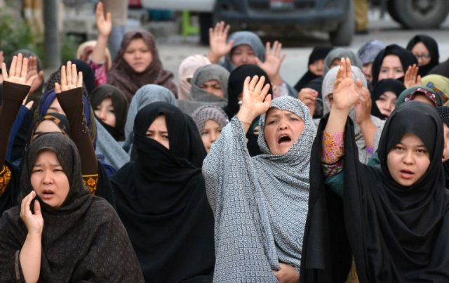
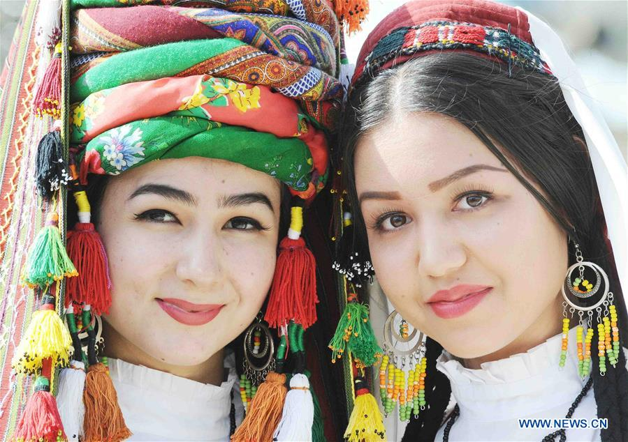

Tajik are the main people in Afghanistan. They are the second largest population in Afghanistan. Tajik's speak dari as there main language. Tajik's are mainly muslim and are sunni. They are originated from Kabul and nowadays they are spread out around all of Kabul. The Tajik population in Afghanistan is shrinking day by day because they are migrating to other countries trying to get away from the war happening in Afghanistan. Most of Tajik people are rich people. That is how they are able to immigrate to other countries.
Pashtun is the largest ethnic group in Afghanistan after Tajik's. They speak a completly different language from the rest of Afghanistan none of the words from Dari to Pashto are not similar to eachother. About 15% of Pakistan are Pashtuns because currently there is a war in Afghanistan and Pakistan has takken over Peshawar where Pashtuns live. Pashtun are loved throughout Afghanistan except for Hazaras. They are very few rich Pashtuns. They are more poor Pashtuns because it is very hard to find work when there is an active war going on.
Hazara are known as the unsafe people of Afghanistan. They live amongst sunni people which from that they have faced cultural, economic discrimination and religious persecution. They are the most hated people in Afghanistan all other three ethic groups (Tajik, Pashtun, Ozbek) hate the Hazara people of Afghanistan. In 1993 there was a war against Pashtuns and Hazaras. Hazara are shia and pashtun are sunni. Hazara speak Dari just like Tajik people of Afghanistan. They are very different looking from the rest of the people that are living in Afghanistan. They have Asian looking eyes and look like they are from China. Hazara live in Hazarajat. This is the central part of Afghanistan. One of the known tribes that are Hazara is "Ismiley". They used to be very poor people for example they used to carry other peoples groceries because they couldn't get a good living. Once the war started against Hazara and Pashtuns they went into peoples home who had vacanted and left everything behind (Sofa, Carpets, television and ETC).
Uzbek people are the fewest to be found in Afghanistan becuase they have there own country "Uzbekistan". About 2,000,000 Uzbeks live in Afghanistan. They speak either 2 dialects of Uzbek, a Turkic language that has been createdfrom the altaic family of languages. The language they speak is very similar to Turkish language (for example Dari to Farsi). Uzbek comes from the word Öz Beg. One of the tribes that are Uzbek are Doostmia. They are very rich and powerful people from the Uzbek decend.
Other types of people can include Turkman, Darwazi, Balochi, Brahui and etc. These people are rare to find in Afghanistan unless you go to where they live. Turkman have a small area up North of Afghanistan. About 72% of the population speaks Turkman, 12% speaks Russian and 16% speak Farsi/Dari. Darwazi are located near Badakhshan. The main language they speak is Dari. They have a population of 16,000 people. They are the village people of Afghanistan. Balochi have a decent amount of land at the bottom of Afghanistan. They have land South-West of Afghanistan. They are originally from Balochistan, but some of there population exists in Afghanistan. People from Balochistan speak Balochi. Finally there are the Brahui. These people are more Pakistani citizens, but still a small majority lives in Afghanistan. The main language of these people are Urdu, but the people who live in Afghanistan are those of the native. They speak Brahui which doesn't really help them in Afghanistan because if they were to migrate more into Afghanistan no one would understand them unless they were to speak Dari or Farsi. It is not like they have taken these land masses. When Afghanistan was created there was so much land that they believed they didn't need so others from other different countries decided to live in these spaces. Afghanistan didn't say anything because they knew they weren't going to use any part of these land masses so they just allowed other countries to bring in there people and live in these parts of Afghanistan. The places where these people live are on the borders of there own countries because they want to be close to there own home countries just in case they ever want to go back or if they want to teach there kids about there homeland.
Top